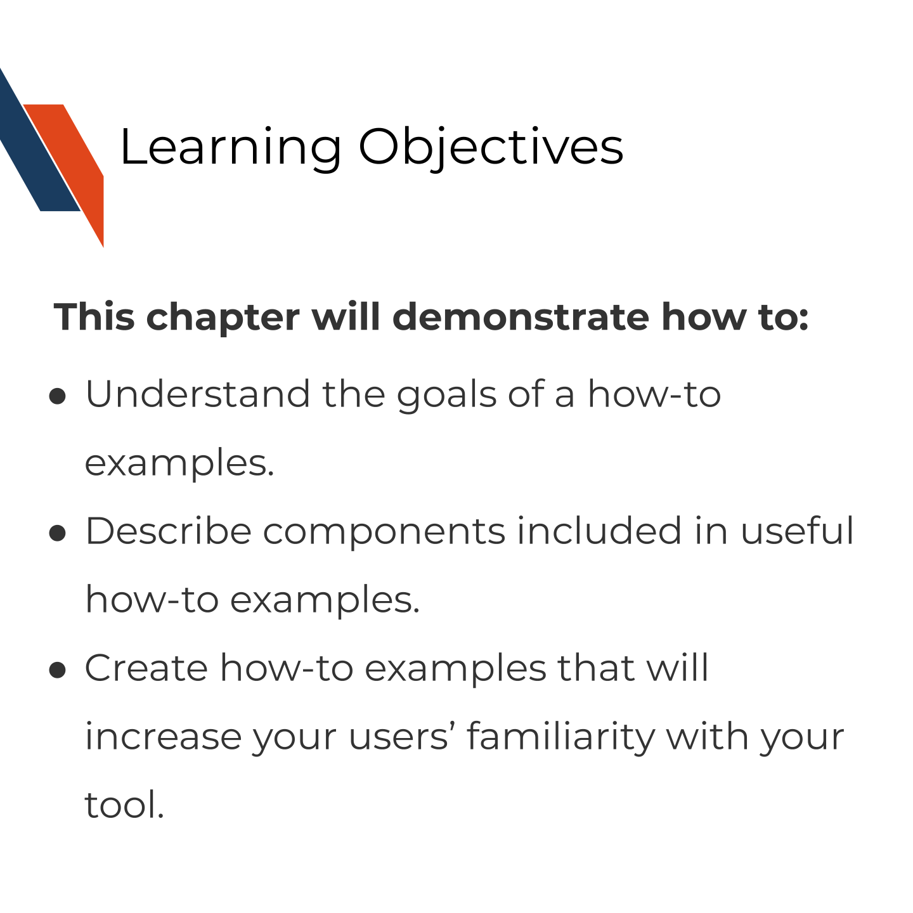
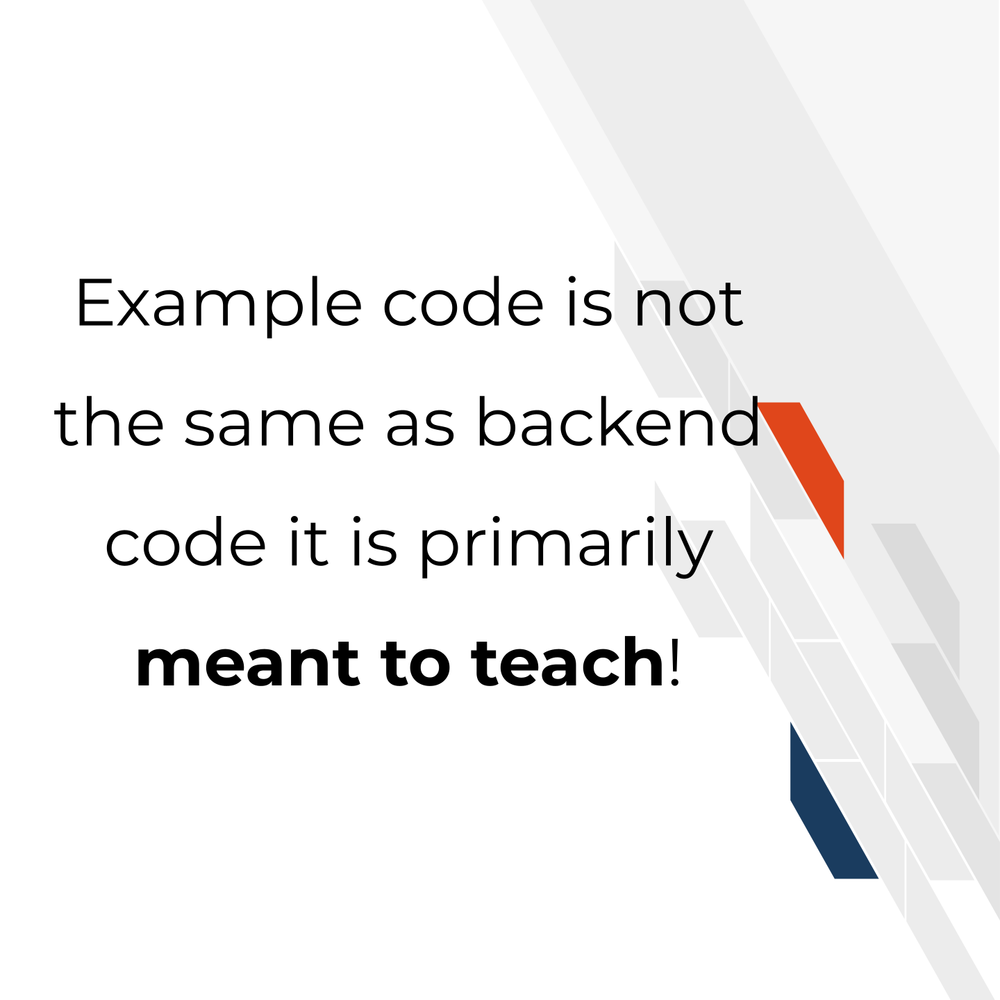
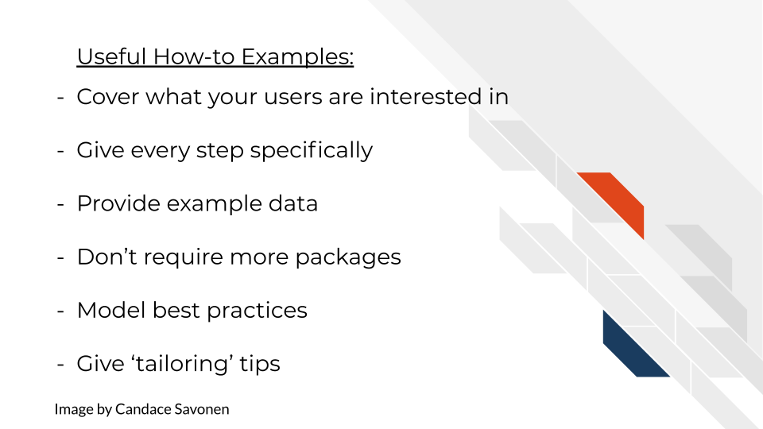

Chapter 6 Creating helpful how-to examples

6.1 The goal of how-to examples
While getting started sections are geared toward brand-new users, how-to examples are geared toward intermediate users that have successfully installed your tool and now want to know more about what they can do with it. How-to examples can turn these moderately interested users into enthusiastic and invested fans of your tool!
How-to examples are like recipes in a cookbook. We can generally assume your user has found the kitchen, now give them sets of steps to create something awesome!

Our goal for our how-to examples is to show off the best and most exciting use cases of your tool!
Note – In some contexts, like Bioconductor, how-to examples are called vignettes – we consider these to be the same.
6.2 Characteristics of useful how-to examples
6.2.1 Should cover what your user wants to do!
Users won’t go through examples that demonstrate analyses they aren’t interested in. So although you may have your favorite pet functions of your tool, it doesn’t necessarily mean that those are the prime interests of your user (though perhaps after you create a good set of examples you can return to make examples of your favorites). You may want to do some asking around, or conduct some user research to find out what your users are most interested in. You also are not restricted to just one example, users love having a full library of how-to examples to choose from! That being said, for your own time and planning, you may want to start with the most common use cases to create examples for and then you can move to more fringe cases.
6.2.2 Every step is specifically given
Examples should explicitly give every step needed to reproduce your result. Keep a special look out for steps you complete that you may take for granted that your user would know. For example, if your user needs to change to a specific directory to run a command, don’t assume that they will know that for sure.
For command line based tools, provide the exact code your user needs to run. Ideally this example can be provided as a notebook or script so your user can run it directly.
In the case of a GUI, provide screenshots or a video tutorial.
6.2.3 Any data needed to run the example is provided and explained
Getting data formatted correctly is another huge hurdle of users and although you should give guidance on how data should be formatted for your tool, your examples should not depend on your user’s data. Instead, provide your users with example data that your example code directly downloads (or is available through your GUI). This has the added benefit of being a positive control for when users are troubleshooting the formatting for their own data later on, but doesn’t force them to face that battle before they can follow your example.
Make sure your example adequately introduces the example: what are the measurements from, what was the goal of this dataset. And of course, link to the source of the data and cite it!
6.2.4 Example code is about the lesson not the output per se
Example code is not the same as backend code. Although example code should also be functional and work, its primarily meant to teach. Even more so than usual, code in examples should always prioritize clarity over cleverness or even brevity.

This means your examples should include the most easily readable code you can muster – this often means extra workshopping to reach peak clarity. Give commentary at each and every step – don’t assume your users understand your typical conventions. Also in the interest of being as readable as possible, try to stick to a styling conventions – s p a c i n g matters!
Related to this, your examples’ code should model best practices.
Pretend you are the model user of your tool – how should your users interact with your tool? This means keeping in mind the important basics:
- Emphasize reproducibility
- Include code comments
- Stick to a code style
- Be consistent with your conventions
- Pick good object names
For more tips on reproducible code:
6.2.5 Try to stick to your own package and its dependencies
Your user already made it through the installation process, try not to make them add more installation steps to follow your examples unless absolutely necessary. If it is absolutely necessary, should a package be added as a dependency – can you have it automatically installed for the user if it is critical to common uses?
6.2.6 Give tips on how to tailor your examples
If your users follow along with your examples successfully, next they will probably need to tailor your examples to their own questions and data. Whether you intend it or not, your examples will probably be used as template framework for your user’s analysis. Knowing this, try to highlight places that users will absolutely need to change the code and other places where they might want to personalize it. Providing them with more resources about options and possibilities is always nice too.
To recap:

6.3 Good examples of How-to examples
DESeq2 has excellent vignettes! Love, Huber, and Anders (2014) walk through the most common use cases of DESeq2, providing data and explaining the set up. They efficiently move into other scenarios, explaining common questions and areas of nuance along the way.
QIIME2 also has an extensive set of examples! Bolyen et al. (2019) give a great set up and hypothesis to a question with a given dataset and walk through each step to answer that question. At the very end of the example they also provide the end result for comparison!
6.4 Exercise: Create your own how-to examples!
Use the how-to example templates to start your own how-to examples either by using the markdown template directly, or navigating to the MkDocs repository you set up in the previous chapter.
If your tool’s destination is Bioconductor or Galaxy, see our specific guidance on those repositories’ examples:
For Bioconductor vignettes:
- Our Bioconductor specific how-to example templates.
- Bioconductor’s own vignette guidance.
- Guidance on writing RMarkdown Vignettes by Andrzej Oleś and Morgan (2021).
For Galaxy vignettes:
References
For all cartoons:
Avataars by https://getavataaars.com/.
Icons by https://thenounproject.com/ License CC BY-NC-ND 2.0.
Emojis by OpenMoji License: CC BY-SA 4.0.↩︎